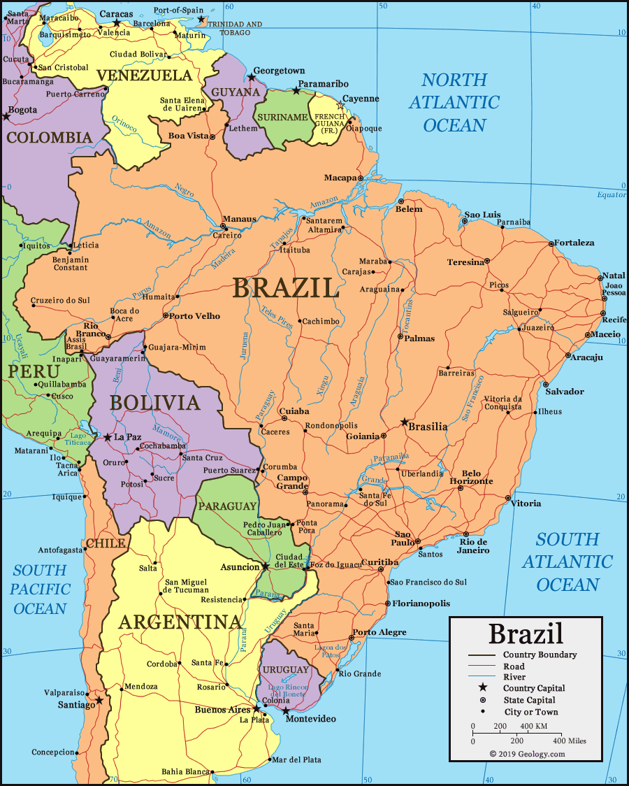

Географічне положення

Натисніть для збільшення
Площа
8,5 млн км²
Берег
7,5 тис. км
Лісистість
~60%
Столиця
Бразиліа
Демографія 2024
Населення:
220,1 млн
Приріст:
0,62 %
Сер. вік:
33 роки
Вікова структура населення
Сектори економіки (ВВП)
Етнічний склад
💡 Чи знаєте ви?
- ✦ Японська громада: У Бразилії проживає понад 2 млн етнічних японців — це найбільша діаспора цієї країни за межами Японії.
- ✦ Біопаливо: Понад 90% нових легкових автомобілів у Бразилії мають двигуни Flex-Fuel, що працюють на етанолі з цукрової тростини.
- ✦ Футбольний рекорд: Бразилія — єдина збірна світу, яка брала участь у кожному фінальному турнірі ЧС з футболу.
Економічний профіль (Нова індустріальна країна)
Промисловість
Бразилія входить у трійку найбільших виробників літаків у світі завдяки компанії Embraer. Також країна є світовим лідером за запасами залізної руди та бокситів.
Агросектор
Країна №1 у світі за виробництвом кави (вже понад 150 років!), цукрової тростини та апельсинів. Друге місце за експортом сої та м'яса яловичини.
Енергетика
Понад 80% електроенергії виробляється на ГЕС (найбільша — «Ітайпу» на кордоні з Парагваєм). Країна активно розвиває офшорний видобуток нафти.